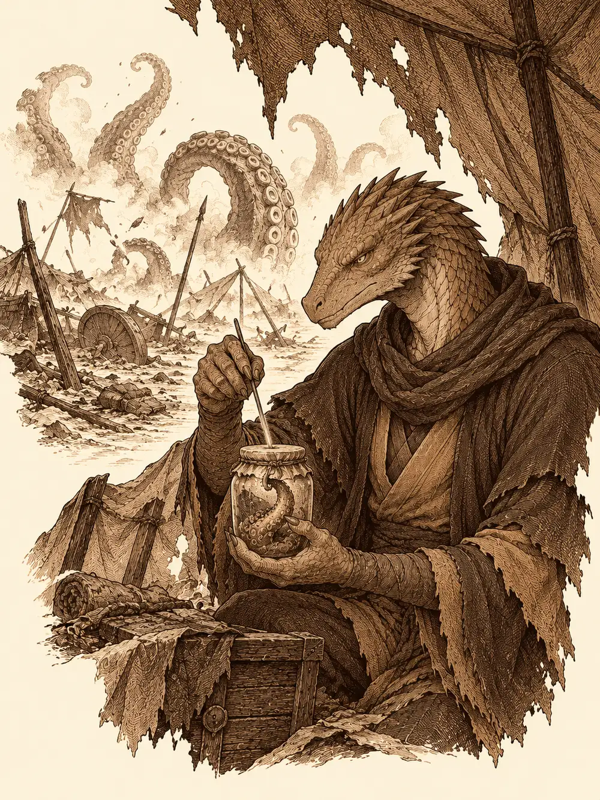

Capítulo 11
Se avecina tormenta
Libro I · Los cazadores de Ukio
El estruendo llegó a las cuatro de la madrugada, como si en algún lugar del bosque se hubiera derrumbado una montaña. En la taberna de Kitaro se despertaron cuatro cazadores a la vez. Hino Yama, el hombre dragón que había jurado vengar su aldea arrasada por los yokai. Tarutaru, con su araña dormida sobre la almohada. Akira, que había caído del plano astral y buscaba la manera de demostrar su valía para volver con los suyos. Y un recién llegado, Sirth, un clérigo elfo, uno de esos shadar-kai que vienen de las sombras, bonachón, de los que ayudan a las ancianas a cruzar la calle. Llevaba al cuello un símbolo que procuraba no enseñar: un círculo con una calavera en el centro y gotas de sangre alrededor.
Fuera, la gente vitoreaba. Una sola palabra, repetida a coro.
En medio de la multitud avanzaba una mujer cubierta de hojas y con una manta sucia y rasgada sobre los hombros, magullada, temblorosa. Los vecinos la tocaban, la abrazaban, lloraban. Tres niñas le tiraban de la manta.
"¡Amaterasu! ¡Amaterasu!".
Un aldeano les explicó, con lágrimas en los ojos, que era la diosa del sol. Su hermano la había encerrado en una cueva hacía muchísimo tiempo, y durante cien años no había salido el sol. Su pueblo la había seguido venerando con un festival que se celebraba para que algún día saliera de su castigo. Sirth hojeó su libro de liturgias y encontró, entre leyendas viejas, cuatro líneas que contaban lo mismo con la etiqueta de curiosidad histórica.
Hino Yama levantó las manos con disimulo y miró a la mujer con otros ojos. Su aura era inmensa, más grande que la plaza entera, pero estaba apagada, crepitando apenas. Aquella aura lo atravesó y no sintió en ella ninguna hostilidad. Aun así fue a ver al sacerdote del templo, el mismo que habían bajado del monte Sudo. El anciano había visto su figura en las losas del templo.
"Si de verdad es ella, es muy desconfiada", le dijo. "Pero muy sentimental. Os pondrá a prueba. Solo se rodeaba de guerreros en quienes confiaba. Ganadla con valor y con sensibilidad".
La mujer se refugió en la taberna. Kitaro atrancó la puerta y avisó a los vecinos de que a quien molestara a la invitada le esperaba una paliza. Hino Yama se sentó frente a ella, se quitó la capa y se la puso sobre los hombros. Le sirvió sake. Ella derramó una lágrima y se puso a comer como si llevara siglos sin hacerlo.
Les habló de su época. Un mundo con muy poca gente y lleno de aberraciones, dioses que combatían entre ellos para imponer sus dominios. Ella había matado a doscientos, o quinientos; había dejado de contarlos. Cuando un dios moría en aquel plano, explicó, volvía a otro plano divino donde todos estaban más restringidos y no podían dañarse, y tenía que esperar para regresar. Nada de aquello encajaba con la Kuroto que ellos conocían, llena de aldeas. Sirth, al oírla hablar de matar dioses, se guardó el amuleto bajo la armadura. Akira llegó a ver el símbolo antes de que desapareciera y no dijo nada.
Luego fue directa al asunto.
"Mañana debo partir para acabar con un mal que creía desaparecido. Un dios devorador. Bakasura". No debía estar allí, dijo. Ella lo había matado en el plano divino, donde estaba prohibido hacerse daño, y por eso la habían encerrado. Ahora él andaba suelto y escupía una parte de sí mismo, una sustancia que se pegaba a los vivos y los infectaba. En pocos días podía extenderse por toda Kuroto. "Pero no puedo pelear sola. Y no confío en vosotros".
Hizo aparecer cuatro pergaminos sellados con cintas antiguas. Solo uno era mágico. Akira se inclinó sobre ellos, comparó los trazos con los que conocía y señaló uno.
"¿Tu nombre?".
"Akira".
"Ahora confío en ti".
La segunda prueba fue una carrera en la calle, delante de las niñas, que no se perdían detalle. Hino Yama corrió; Tarutaru mandó a su araña a trepar por las piernas de Sirth, que intentaba envolver a los otros en una bola de oscuridad y sintió los pinchazos a mitad del conjuro; Akira deslizó una mano invisible hacia el tobillo del hombre dragón, que notó un soplo de aire tibio y siguió corriendo. Llegó el primero.
"Ahora confío en ti también".
Sirth subió a su cuarto, se arrodilló y rezó a su dios. Oyó un rascar en la pared. Abrió los ojos. Unas garras que no estaban allí arrancaban astillas y grababan letras en la madera.
Aléjate. Aléjate de ella. Peligro.
Se lo contó a los demás en voz baja.
Tarutaru dejó que la araña subiera a la mano de la diosa, que empezó a jugar con ella entre los dedos y sonrió por primera vez.
"Ella te ha elegido", le dijo la drow. "Si ella confía en ti, yo también".
"Entonces yo confío en ti".
Sirth, que no se fiaba en absoluto, se fijó en las heridas que asomaban bajo la manta y le preparó una cataplasma de plantas. Amaterasu se dejó curar.
"Gracias. ¿Cómo te llamabas?".
"Sirth".
"Ahora confío en ti".
Partieron hacia el sur. Ella sentía un aura, una sombra que se extendía cada vez más, y caminaba delante sin vacilar. A la entrada de un camino se detuvo.
Había un hombre empalado en una cruz de madera. Ya no era un hombre. La piel estaba vacía, estirada sobre los huesos como un pellejo sobre un bastidor, y por los agujeros donde habían estado los ojos y la boca rezumaba un líquido negro y espeso. Una túnica yacía a sus pies, y en la cruz había una espada corta clavada. La piel estaba cubierta de tatuajes.
Hino Yama examinó la espada con todos los conjuros que conocía y no encontró nada. Akira la sacó con su mano invisible, la hizo girar en el aire y se la ofreció a Amaterasu.
"Es completamente normal", dijo ella. "Un poco gastada, nada más".
Akira se la colgó del cinturón. Amaterasu levantó su propia espada hacia el sol y los tatuajes del muerto se encendieron un instante: eran sellos, antiguos sellos protectores que usaban cazadores y monjes.
Hino Yama sacó un cuchillo para recortar uno.
El líquido negro le corrió por los dedos, y en ese mismo instante apareció junto a él un hombre enorme, de mirada de tormenta, con una espada larguísima, y de un tajo le cortó la mano por la muñeca.
El hombre dragón cayó al suelo aullando. Amaterasu soltó un gemido.
"Hermano".
Recogió la mano del suelo, la sostuvo contra el muñón y levantó la otra hacia el sol. Hubo unos segundos de luz y de dolor, y la mano volvió a su sitio como una pieza encajada a presión. Sirth le pinchó los dedos con una aguja, uno por uno. Todos respondían.
"No sabía que los amigos de mi hermana fueran tan idiotas", dijo el recién llegado. Se llamaba Susano. "Si queréis perder la vida, volved a tocar eso". Los había estado vigilando. Había más rastros de aquella sustancia por la zona; que tuvieran cuidado. "No volveré a salvaros. Pero cuando nos enfrentemos a esa cosa de los tentáculos, estaré con vosotros".
Alguien le preguntó qué había pasado entre él y su hermana.
"Por su culpa madre me desprecia". Apoyó la hoja en el cuello de Amaterasu, que ni se inmutó. "Pero si mato a ese Bakasura, quizá padre me deje volver al reino del infierno. Allí estableceré mi dominio. Llevaré la tormenta primero al infierno. Más tarde os la traeré a vosotros".

Al tercer paso echó a correr y se convirtió en una estela, en un rayo, y desapareció. Al norte, sobre los árboles, se estaba formando una tormenta.
Mientras los demás distraían a la diosa, Sirth llenó un frasco pequeño con el líquido negro del empalado. Cuando acercó la cara al cristal, la sustancia se movió hacia él.
Un poco más allá había un campamento destrozado. Cinco tiendas, tres de ellas reventadas. Un sombrero colgaba de una rama. Había sangre por todas partes, y al fondo, cerrando el camino, se retorcían unos tentáculos enormes que salían de la tierra. Olía a azufre, a podredumbre y, por debajo, a sake, un olor que les trajo de golpe las noches de la taberna.
Hino Yama calculó la sangre. Cinco personas y un caballo, quizá. No había cuerpos. Los habían arrastrado entre dos o tres cosas más pequeñas que un hombre. Sirth echó sangre en su frasco y el líquido no hizo nada; echó un trozo de carne, y la sustancia saltó sobre él como un perro.
Entonces Akira y Sirth vieron, cada uno por su lado, algo que los demás no veían. Una de las niñas de la aldea se alejaba entre los árboles de la mano de lo que cada uno más deseaba en el mundo. Akira vio a otra Amaterasu. Sirth vio una daga ritual de su culto, resplandeciente, cubierta de sangre. Los dos la siguieron.
Mientras tanto, junto a la hoguera, que seguía encendida, encontraron cinco cuencos de sake: dos boca abajo, dos vacíos y uno lleno hasta el borde, con el símbolo de los druidas dibujado. La araña de Tarutaru se quedó con una pata pegada al lacre de una carta, y la drow la despegó con cuidado. Era de una mujer llamada Gloria a su hermana Elara. Le agradecía los pergaminos mágicos que le había dado antes del viaje y le presentaba al mago del grupo, un joven llamado Aelar, de una magia asombrosa, capaz de doblar y retorcer sus propios conjuros a voluntad. Soltero, añadía, por si a su hermana le interesaba.
En otra tienda, entre tinteros rotos, Hino Yama encontró un tarro con un tentáculo pequeño dentro que se volvía hacia él como si lo mirara. Clavó una aguja larga a través de la tapa y pinchó al bicho. Fuera, los tentáculos gigantes temblaron. Hizo un gesto, y se apartaron.
En el bosque, las niñas se convirtieron en otra cosa. Akira y Sirth se encontraron, cada uno solo, frente a una vieja arrugada que hablaba con la misma voz y las mismas palabras que la que estaba frente al otro, como si fueran una sola. Moiras.
"¿Qué esperabais encontrar al final del camino?".
"Conocimiento", dijo Akira.
Sirth preguntó por la daga.
"No hay daga. Era un instrumento para traerte". La oscuridad lo envolvió todo, y quedaron solo ella y una luz blanca muy pequeña. "Aquella que os acompaña es pura. Pero no por eso debéis fiaros de ella. Deberás matarla cuando lo creas conveniente. El peligro que se cierne sobre Kuroto es grande".
Les propuso un juego: preguntas sobre los dioses antiguos de aquellas tierras. Si acertaban, les daría una parte de su poder. Ambos acertaron, y ambos volvieron al campamento sintiendo algo nuevo dentro.
Sirth contó que una vieja le había dicho que no se fiaran de la diosa. Amaterasu frunció el ceño.
"¿Has hablado con las Moiras? Para invocarlas hay que hacer rituales. No te creo".
Las cartas explicaban el resto. Los viajeros habían hecho un ritual para guardar algo: cada uno debía sentarse alrededor del fuego frente a su cuenco con su símbolo y beber a la vez. Dedujeron los símbolos que faltaban. El hechicero, por aquellos conjuros que Aelar sabía doblar a voluntad. El explorador, por una tienda hecha para pasar desapercibida en el bosque. El monje, por los sellos del empalado. Amaterasu rellenó los cuencos. Se sentaron los cuatro y bebieron.
El fuego subió dos metros y se apagó de golpe. En la ceniza brotó un pergamino.
"Un pergamino divino", dijo ella. "Solo tiene un uso. Si cuatro rodean al enemigo y lo activan, le harán mucho daño".
La mano invisible de Akira lo recogió antes que nadie y lo llevó hasta su propia bolsa, lejos de la diosa.
Con el tarro en la mano, Hino Yama abrió paso entre los tentáculos. Al otro lado había una casa y un viñedo, y entre las vides, montones de cuerpos apilados. Amaterasu alzó la mano y una luz cálida los envolvió a todos; Sirth hizo aparecer junto a él una maza espectral erizada de pinchos.
De las pilas de cadáveres empezaron a salir criaturas. Una gritó, el pecho se le abrió como una boca llena de dientes, y de dentro brotaron tentáculos que azotaban el aire.
Los primeros cayeron rápido bajo la magia de Akira y los conjuros de Sirth. Entonces llegó la tormenta. Susano apareció junto a su hermana, la golpeó con la espada y gritó por encima del viento:
"¡Nuestro padre me devolverá el infierno, y esta vez solo yo reinaré en él!".
Sirth se desvaneció en un paso de niebla y reapareció lejos de su alcance. Hino Yama envolvió a Susano en una telaraña, la prendió con las manos ardiendo y le arrojó encima su botella de sake.
La criatura más grande saltó contra Tarutaru. La drow le salió al paso y la abrió de arriba abajo, desde los dientes del pecho, que saltaron por el aire, hasta el vientre. Por dentro no tenía órganos; solo oscuridad y una masa negra que se movía. Akira la remató con fuego. Era Bakasura, o lo que de él había allí. Al caer, todas las demás criaturas se desplomaron.
Amaterasu miró a su hermano. Había miedo en sus ojos. Luego se volvió hacia Hino Yama.
"Ya no confío en ti".
Alguno de ellos lo entendió. Quizá no quedaba ningún otro dios de su tiempo. Si mataban a Susano, no le quedaría nadie.
"¿A ti qué te pasa?", le preguntó Sirth. "Nos traes hasta aquí, tu hermano te pega, nos defendemos, ¿y ahora no confías en nosotros?".
"Cosas de dioses", contestó ella. "Tú no importas, hormiga". Y luego, a todos: "Os pido que no uséis el pergamino. Ni con mi hermano ni conmigo".
Y se lanzó contra quienes atacaban a Susano. Unos espíritus guardianes empezaron a girar a su alrededor, cortando a todo el que se acercaba. La pelea ya no tenía bando: los dos dioses contra ellos, y entre los dos, ellos.
Sirth golpeó a la diosa con la maza; el arma se volvió negra y le arrancó un jirón de vida. Tarutaru le hundió la espada envenenada a Susano. Hino Yama, sangrando, sin fuerzas, sacó lo último que tenía y escupió un torrente de fuego sobre él. El dios cayó a cuatro patas, con la piel abierta por las llamas.
"Siempre recordaré tu nombre".
Y se desplomó.
La araña de Tarutaru saltó sobre Amaterasu, y los espíritus guardianes la deshicieron en el aire.
Akira se acercó a la diosa. Ella estaba casi sin fuerzas. Él la agarró por la nuca, la acercó a su cara y la besó. Tarutaru, detrás de ella, vio salir por su espalda la punta de una espada corta: la del empalado, la que todos habían dicho que era completamente normal. Amaterasu se desplomó en el suelo.
El pergamino seguía sin usar en la bolsa de Akira.
Sobre ellos, el cielo se partió en dos. De un lado avanzaba la tormenta, negra, llena de truenos. Del otro, los rayos del sol iban rasgando las nubes. Las dos mitades se encontraron justo encima del viñedo, sobre los cuatro cazadores, y allí se quedaron.